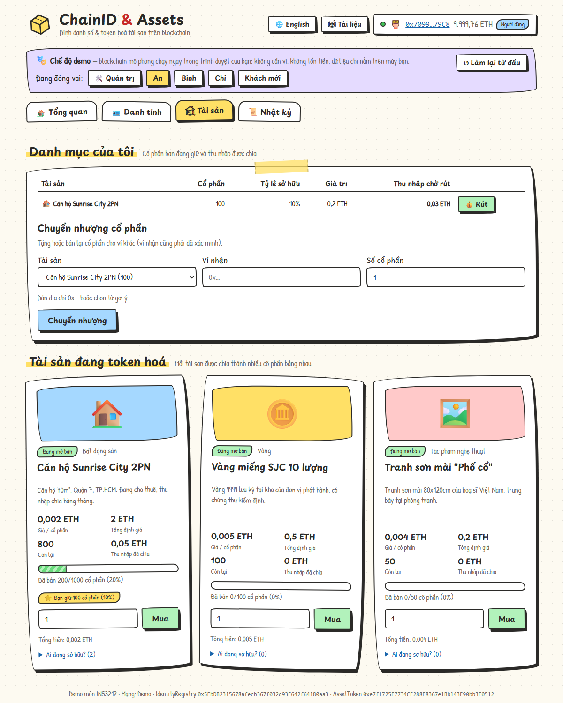
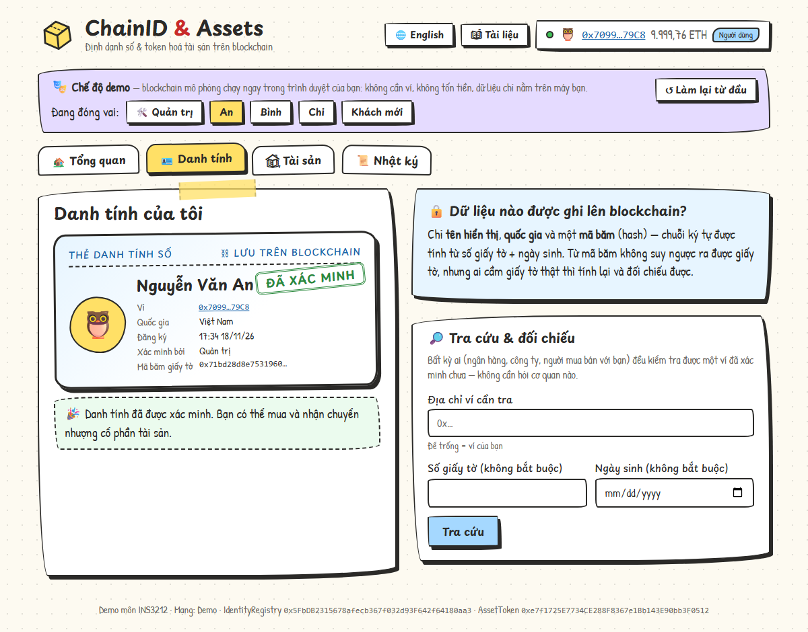
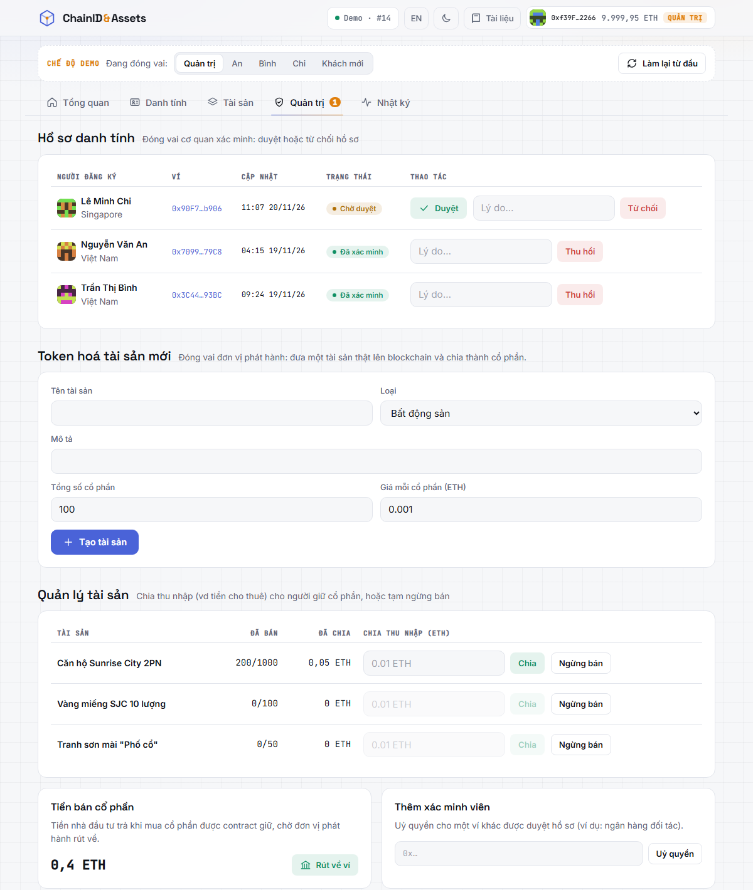
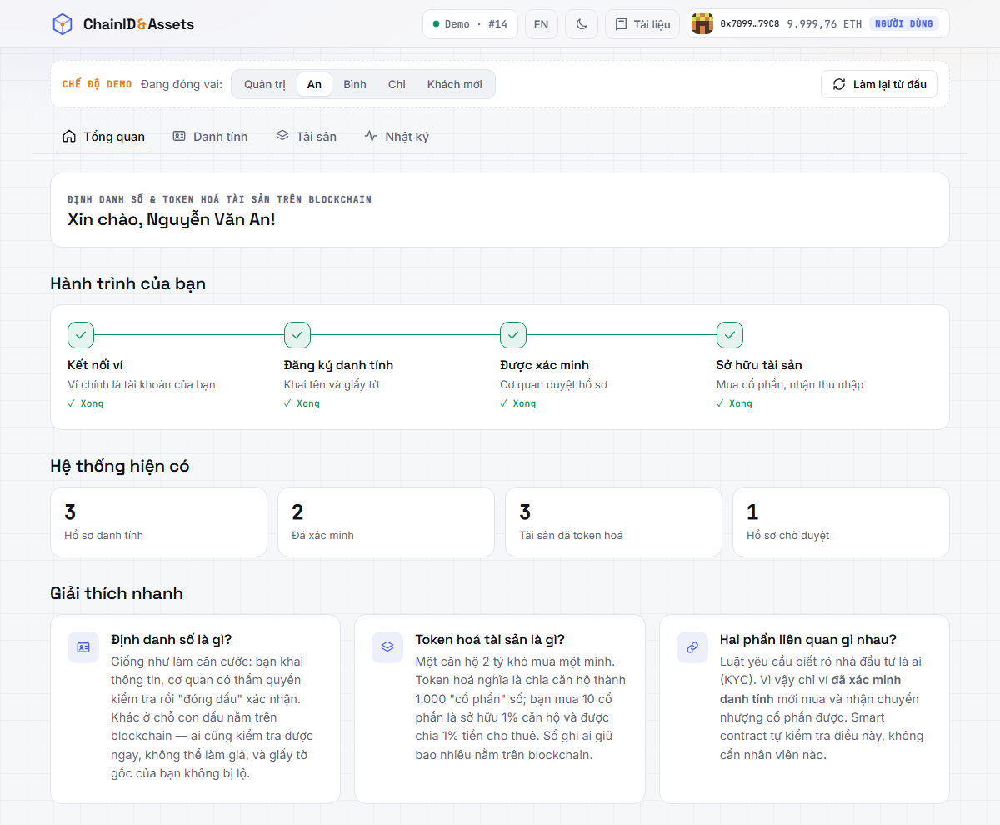
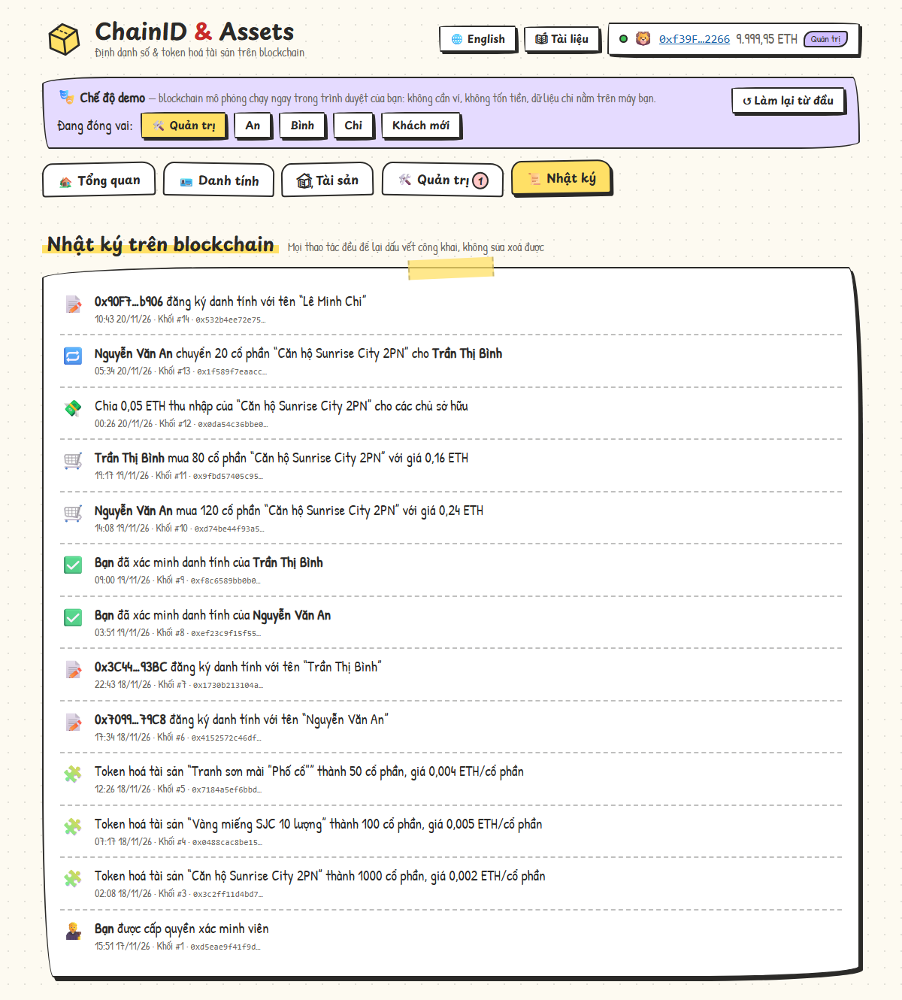
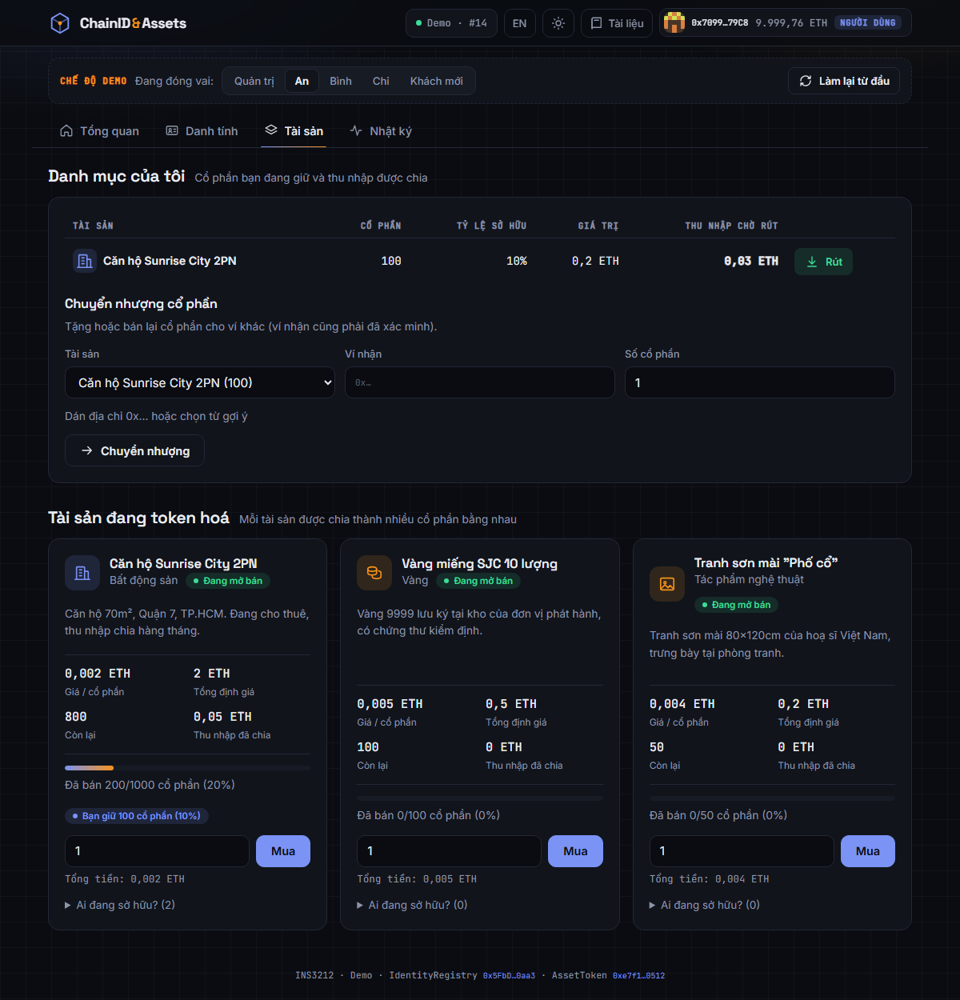
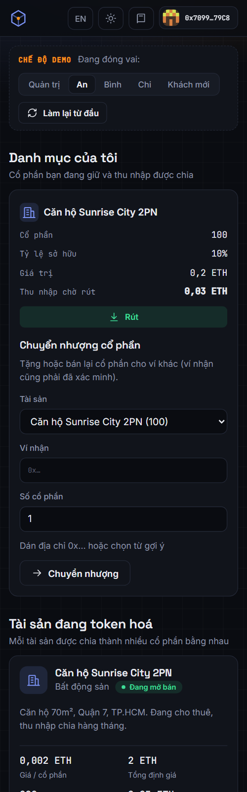

ChainID & Assets
Demo cho môn INS3212 – Blockchain and Cryptocurrency: hệ thống định danh số (Topic 4) kết hợp token hoá & quản lý tài sản (Topic 3) chạy trên Ethereum.
⚡ Cách nhanh nhất để xem demo: không cần cài gì
Mở giao diện ở chế độ demo. Một blockchain Ethereum mô phỏng sẽ chạy ngay trong trình duyệt, có sẵn dữ liệu mẫu và thanh “Đang đóng vai” để đổi giữa Quản trị / An / Bình / Chi / Khách mới. Không cần MetaMask, không cần ETH, không cần chạy lệnh nào. Chi tiết ở mục 12.
1.Đề bài
Đề thi cuối kỳ không phải bài thi viết mà là đồ án nhóm. Mỗi nhóm nhận một đề tài, tìm hiểu và nộp báo cáo kèm phần mềm demo.
Yêu cầu nộp bài
- Báo cáo tối thiểu 20 trang về đề tài được giao.
- Gửi file Word qua email giảng viên trước ngày thi 1 ngày.
- Nộp bản in vào ngày thi.
- Có demo phần mềm chạy được.
Hai đề tài mà demo này phủ
Topic 3 Blockchain technology for tokenizing and managing assets
Topic 4 Blockchain-based Identity Management System
Hai phần chạy độc lập được, nhưng được nối với nhau để tạo thành một câu chuyện trọn vẹn: phải xác minh danh tính thì mới được sở hữu tài sản số.
Thang điểm và demo này giúp được gì
| # | Tiêu chí | Điểm | Tài liệu / demo hỗ trợ phần nào |
|---|---|---|---|
| 1 | Introduction – giới thiệu tổng quan đề tài | 1.5 | Mục 2 (lý thuyết), mục 3 (bài toán & ý tưởng) |
| 2 | Body – các nội dung chính, chia đề mục rõ ràng | 5 | Mục 2, 3, 4 và dàn ý ở mục 10 |
| 3 | Conclusion – tổng hợp, đánh giá, ý kiến cá nhân | 1 | Mục 9 (hạn chế, hướng phát triển) là chất liệu để viết nhận định riêng |
| 4 | Software demo | 2 | Toàn bộ project này + kịch bản ở mục 7 |
| 5 | Trình bày: không lỗi chính tả, có mục lục, danh mục hình, bảng | 0.5 | Ảnh chụp màn hình trong docs/img dùng làm hình minh hoạ |
2.Lý thuyết nền tảng
2.1. Blockchain là gì?
Hãy tưởng tượng một cuốn sổ cái ghi mọi giao dịch, nhưng thay vì một ngân hàng giữ, hàng nghìn máy tính trên thế giới mỗi máy giữ một bản sao giống hệt nhau. Muốn ghi thêm một trang mới (một khối – block), đa số các máy phải đồng ý. Mỗi trang lại chứa "dấu vân tay" (hash) của trang trước, nên sửa một trang cũ sẽ làm lệch toàn bộ các trang sau và bị phát hiện ngay.
🧱 Bất biến (immutable)
Dữ liệu đã ghi thì không sửa, không xoá được. Đây là lý do blockchain phù hợp để lưu "ai sở hữu cái gì" và "ai đã được xác minh".
🌐 Phi tập trung (decentralized)
Không có một máy chủ hay tổ chức duy nhất kiểm soát. Hệ thống vẫn chạy khi một vài máy hỏng hoặc gian lận.
🔍 Minh bạch (transparent)
Ai cũng xem được toàn bộ lịch sử giao dịch. Trong demo, tab Nhật ký chính là lịch sử đó.
🤝 Đồng thuận (consensus)
Quy tắc để các máy thống nhất khối nào hợp lệ. Ethereum hiện dùng Proof of Stake: người xác thực đặt cọc ETH, gian lận thì mất cọc.
2.2. Ethereum và smart contract
Ethereum là một blockchain không chỉ ghi "A chuyển tiền cho B" mà còn chạy được chương trình. Chương trình đó gọi là smart contract (hợp đồng thông minh): một đoạn code được đưa lên blockchain, có địa chỉ riêng, và tự động thực thi đúng như đã viết — không ai, kể cả tác giả, sửa được sau khi triển khai.
Ví dụ dễ hiểu: máy bán nước tự động. Bỏ đủ tiền → máy nhả nước, không cần người bán, không thể "xin xỏ". Smart contract của demo hoạt động y như vậy: gửi đủ ETH và ví đã xác minh → nhận cổ phần; thiếu một điều kiện → giao dịch bị từ chối.
| Khái niệm | Giải thích ngắn | Trong demo |
|---|---|---|
| Ví (wallet) & địa chỉ | Cặp khoá: khoá bí mật (private key, giữ kín, dùng để ký) và địa chỉ công khai dạng 0x… (như số tài khoản). | MetaMask giữ khoá; địa chỉ ví chính là "tài khoản đăng nhập". |
| Giao dịch (transaction) | Một yêu cầu thay đổi dữ liệu trên blockchain, được ký bằng khoá bí mật. | Đăng ký, duyệt, mua, chuyển nhượng… mỗi thao tác là một giao dịch. |
| Gas | Phí trả cho mạng lưới để thực thi giao dịch, tính bằng ETH. Chỉ ghi mới tốn gas, đọc thì miễn phí. | Cửa sổ MetaMask hiện phí gas trước khi bạn bấm xác nhận. |
| Solidity | Ngôn ngữ lập trình phổ biến nhất để viết smart contract cho Ethereum. | 2 file trong thư mục contracts/. |
| Event | "Thông báo" contract phát ra khi có việc xảy ra; được lưu vĩnh viễn và tra cứu được. | Nguồn dữ liệu của tab Nhật ký. |
| Testnet | Mạng thử nghiệm giống hệt mạng thật nhưng ETH không có giá trị, xin miễn phí. | Sepolia – xem mục 6. |
2.3. Token và token hoá tài sản Topic 3
Token là một đơn vị giá trị số do smart contract quản lý. Token hoá tài sản (asset tokenization, hay Real-World Asset – RWA) là việc biểu diễn quyền sở hữu một tài sản thật — nhà đất, vàng, tranh, cổ phần công ty — bằng token trên blockchain.
Vì sao cần?
- Chia nhỏ (fractional ownership): căn hộ 2 tỷ chia 1.000 phần, mỗi phần 2 triệu → nhiều người mua được.
- Thanh khoản: bán lại vài cổ phần dễ hơn bán cả căn nhà.
- Minh bạch: danh sách chủ sở hữu công khai, không thể sửa lén.
- Tự động: chia tiền thuê đúng tỷ lệ bằng code, không qua trung gian.
- Nhanh, 24/7: chuyển nhượng trong vài giây thay vì vài tuần giấy tờ.
Các chuẩn token phổ biến
- ERC-20 – token giống hệt nhau, thay thế được (tiền, cổ phần của một tài sản).
- ERC-721 (NFT) – mỗi token độc nhất (một bức tranh, một sổ đỏ).
- ERC-1155 – một contract quản lý nhiều loại token, mỗi loại có nhiều đơn vị.
- ERC-3643 / ERC-1400 – "security token": token chứng khoán, bắt buộc kiểm tra danh tính người nắm giữ.
Demo dùng mô hình giống ERC-1155 (nhiều tài sản, mỗi tài sản nhiều cổ phần) cộng thêm quy tắc kiểm tra danh tính kiểu ERC-3643, nhưng viết gọn để dễ đọc.
2.4. Định danh số Topic 4
Định danh số trả lời câu hỏi "làm sao chứng minh trên mạng rằng tôi là tôi?". Có ba mô hình:
| Mô hình | Ai giữ dữ liệu? | Ví dụ | Nhược điểm |
|---|---|---|---|
| Tập trung | Từng tổ chức giữ riêng | Tài khoản ngân hàng, tài khoản từng website | Mỗi nơi một tài khoản; lộ dữ liệu hàng loạt khi bị hack |
| Liên kết (federated) | Một nhà cung cấp lớn | "Đăng nhập bằng Google/Facebook" | Phụ thuộc và bị theo dõi bởi nhà cung cấp |
| Tự chủ (Self-Sovereign Identity – SSI) | Chính người dùng (trong ví) | DID + Verifiable Credentials trên blockchain | Người dùng tự chịu trách nhiệm giữ khoá |
Các khái niệm chính của mô hình blockchain:
- DID (Decentralized Identifier): mã định danh do người dùng tự tạo và kiểm soát. Trong demo, địa chỉ ví đóng vai trò DID.
- Issuer / Verifier (bên cấp, bên xác minh): tổ chức có thẩm quyền kiểm tra giấy tờ thật rồi "ký xác nhận". Trong demo là ví quản trị và các ví được uỷ quyền.
- Holder (chủ thể): người sở hữu danh tính — người dùng.
- Relying party (bên tin cậy): bên cần kiểm tra danh tính — ở đây chính là contract
AssetToken, hoặc bất kỳ ai dùng ô "Tra cứu". - KYC (Know Your Customer): quy trình bắt buộc theo luật để tổ chức tài chính biết khách hàng là ai, chống rửa tiền.
2.5. Hàm băm và quyền riêng tư
Hàm băm (hash, ở đây là keccak256) biến dữ liệu bất kỳ thành một chuỗi 64 ký tự hex. Cùng đầu vào → luôn cùng kết quả; đổi một ký tự → kết quả khác hoàn toàn; và không tính ngược lại được.
keccak256("001200012345|2000-05-20")
= 0x71bd28d8e7… ← chỉ chuỗi này được ghi lên blockchainVì blockchain công khai với mọi người, không bao giờ ghi dữ liệu cá nhân thô lên chuỗi. Demo chỉ ghi mã băm của (số giấy tờ + ngày sinh), được tính ngay trong trình duyệt. Ai cầm giấy tờ thật có thể băm lại và so khớp, còn người ngoài nhìn vào blockchain không đọc được số giấy tờ.
3.Ý tưởng & kiến trúc
3.1. Câu chuyện của demo
Một công ty muốn bán "cổ phần" căn hộ, vàng, tranh cho nhiều nhà đầu tư nhỏ. Pháp luật yêu cầu công ty phải biết nhà đầu tư là ai. Thay vì hồ sơ giấy và sổ sách nội bộ, họ dùng blockchain:
| Vai | Là ai ngoài đời | Làm được gì trong demo |
|---|---|---|
| 🛠️ Quản trị (ví deploy) | Cơ quan xác minh + đơn vị phát hành tài sản | Duyệt / từ chối / thu hồi danh tính; token hoá tài sản; chia thu nhập; tạm ngừng bán; rút tiền bán; uỷ quyền xác minh viên |
| 🧑⚖️ Xác minh viên | Đối tác được uỷ quyền (vd ngân hàng) | Duyệt / từ chối / thu hồi danh tính |
| 🙂 Người dùng | Công dân / nhà đầu tư | Đăng ký danh tính; mua, chuyển nhượng cổ phần; rút thu nhập; tra cứu |
| 👀 Bất kỳ ai | Bên thứ ba cần kiểm tra | Tra cứu trạng thái xác minh của một ví, đối chiếu giấy tờ, xem nhật ký |
3.2. Sơ đồ kiến trúc
Điểm đáng chú ý: không có máy chủ backend và không có cơ sở dữ liệu. Trang web chỉ là file tĩnh; toàn bộ dữ liệu và luật nghiệp vụ nằm trong hai smart contract. AssetToken hỏi IdentityRegistry "ví này đã xác minh chưa?" trước mỗi lần mua hoặc chuyển nhượng.
3.3. Luồng nghiệp vụ chính
- Đăng ký: người dùng nhập tên, quốc gia, số giấy tờ, ngày sinh → trình duyệt băm (số giấy tờ + ngày sinh) → gửi
register()→ trạng thái Chờ duyệt. - Xác minh: cơ quan kiểm tra giấy tờ thật ngoài đời, rồi gọi
verify()→ trạng thái Đã xác minh. Nếu không hợp lệ thìrevoke()kèm lý do. - Token hoá: đơn vị phát hành gọi
createAsset()với tên, số cổ phần, giá mỗi cổ phần. - Mua: người dùng gọi
buyShares()kèm đúng số ETH → contract kiểm tra danh tính, số cổ phần còn lại, số tiền → ghi nhận quyền sở hữu. - Chia thu nhập: đơn vị phát hành nạp tiền thuê bằng
distributeIncome()→ mỗi người được phần tương ứng tỷ lệ cổ phần → tự rút bằngclaimIncome(). - Chuyển nhượng:
transferShares()— cả người gửi và người nhận phải đã xác minh.
4.Thực hiện ra sao
4.1. Cấu trúc thư mục
blockchain-demo/
├─ contracts/
│ ├─ IdentityRegistry.sol # Topic 4 – sổ đăng ký danh tính
│ └─ AssetToken.sol # Topic 3 – token hoá & quản lý tài sản
├─ test/demo.test.js # 10 bài kiểm thử tự động
├─ scripts/
│ ├─ deploy.js # deploy + tạo 3 tài sản mẫu + ghi địa chỉ contract cho web
│ ├─ demo-data.js # (tuỳ chọn) tạo sẵn người dùng & giao dịch mẫu trên local
│ ├─ build-web.js # sinh contracts.js + đóng gói blockchain mô phỏng
│ └─ serve.js # web server tĩnh, cổng 5173
├─ web-src/sim-chain.mjs # mã nguồn blockchain mô phỏng (chế độ demo)
├─ frontend/ # TOÀN BỘ trang web tĩnh – đưa lên mạng là chạy
│ ├─ index.html · style.css # khung trang + giao diện (sáng/tối, mobile)
│ ├─ app.js # logic: kết nối ví, đọc/ghi contract, vẽ màn hình
│ ├─ i18n.js # từ điển Việt / Anh
│ ├─ demo-mode.js # chế độ demo: ví + dữ liệu mẫu, không cần MetaMask
│ ├─ contracts.js # TỰ SINH: ABI + bytecode của 2 contract
│ ├─ config.js # TỰ SINH khi deploy Sepolia: địa chỉ contract
│ ├─ config.local.js # TỰ SINH khi deploy local (không commit)
│ └─ vendor/ # ethers.js + sim-chain.js (đã đóng gói)
├─ docs/index.html # tài liệu này
├─ .github/workflows/pages.yml # tự đưa web lên GitHub Pages khi push
├─ hardhat.config.js · package.json · .env.example4.2. Contract IdentityRegistry Topic 4
Mỗi ví có một bản ghi Identity gồm: tên hiển thị, quốc gia, mã băm giấy tờ, trạng thái, thời điểm đăng ký/cập nhật, người xác minh và ghi chú. Trạng thái đi theo vòng đời:
None ──register()──▶ Pending ──verify()──▶ Verified
│ │
└──────revoke()────────┴──▶ Revoked ──register()──▶ Pending| Hàm | Ai gọi được | Tác dụng & điều kiện |
|---|---|---|
register(name, country, docHash) | Bất kỳ ví nào | Tạo hồ sơ cho chính ví gọi. Chỉ khi chưa đăng ký hoặc đã bị thu hồi. Một giấy tờ chỉ gắn được với một ví. |
verify(user) | Xác minh viên | Duyệt hồ sơ đang Pending. |
revoke(user, reason) | Xác minh viên | Từ chối hồ sơ chờ hoặc thu hồi danh tính đã duyệt, ghi lại lý do. |
setVerifier(account, enabled) | Chủ hệ thống | Thêm / bớt xác minh viên. |
isVerified(user) | Ai cũng đọc được | Trả về true/false. Đây là hàm mà AssetToken gọi. |
checkDocument(user, docHash) | Ai cũng đọc được | Đối chiếu giấy tờ (đã băm) với hồ sơ của ví. |
getIdentity(user), getUsers() | Ai cũng đọc được | Lấy hồ sơ và danh sách ví đã đăng ký. |
Phân quyền được viết bằng modifier — đoạn kiểm tra chạy trước thân hàm:
modifier onlyVerifier() {
require(isVerifier[msg.sender], "Only verifier"); // msg.sender = ví đang gọi
_;
}
function verify(address user) external onlyVerifier {
Identity storage id = identities[user];
require(id.status == Status.Pending, "Not pending");
id.status = Status.Verified;
id.verifiedBy = msg.sender;
emit IdentityVerified(user, msg.sender); // ghi vào nhật ký
}4.3. Contract AssetToken Topic 3
Mỗi tài sản là một bản ghi Asset (tên, loại, mô tả, tổng cổ phần, đã bán, giá, đang mở bán?, tổng thu nhập đã chia). Sổ sở hữu là bảng balanceOf[assetId][ví] = số cổ phần.
| Hàm | Ai gọi được | Tác dụng & điều kiện |
|---|---|---|
createAsset(name, category, description, totalShares, pricePerShare) | Đơn vị phát hành | Token hoá một tài sản mới. |
buyShares(assetId, amount) payable | Ví đã xác minh | Đang mở bán, còn đủ cổ phần, gửi đúng amount × giá ETH. |
transferShares(assetId, to, amount) | Ví đã xác minh | Người nhận cũng phải đã xác minh; người gửi đủ cổ phần. |
distributeIncome(assetId) payable | Đơn vị phát hành | Nạp ETH thu nhập để chia cho người đang giữ cổ phần. |
claimIncome(assetId) | Người giữ cổ phần | Rút phần thu nhập của mình về ví. |
setSaleOpen(assetId, open) | Đơn vị phát hành | Tạm ngừng / mở lại việc bán. |
withdrawProceeds() | Đơn vị phát hành | Rút tiền bán cổ phần. |
getAssets(), getHolders(id), claimableIncome(id, ví) | Ai cũng đọc được | Dữ liệu cho giao diện. |
Chỗ hai đề tài gặp nhau chỉ là một dòng — contract tài sản gọi sang contract danh tính:
modifier onlyVerified() {
require(registry.isVerified(msg.sender), "Identity not verified");
_;
}Cách chia thu nhập hoạt động
Nếu lặp qua toàn bộ chủ sở hữu để chuyển tiền thì càng đông người càng tốn gas, thậm chí vượt giới hạn khối. Contract dùng kỹ thuật phổ biến: lưu "thu nhập luỹ kế trên mỗi cổ phần", và mỗi người tự rút phần của mình.
Ví dụ: An giữ 30 cổ phần, Bình giữ 10 (tổng đã bán 40).
- Phát hành nạp 4 ETH → mỗi cổ phần được 4 ÷ 40 = 0,1 ETH. An có 3 ETH, Bình có 1 ETH chờ rút.
- An chuyển 10 cổ phần cho Chi. Trước khi đổi số dư, contract chốt 3 ETH cho An; Chi bắt đầu từ 0.
- Nạp tiếp 4 ETH → thêm 0,1 ETH/cổ phần. An: 3 + 20×0,1 = 5 ETH; Chi: 10×0,1 = 1 ETH; Bình: 1 + 1 = 2 ETH.
Kịch bản này chính là một bài test trong test/demo.test.js.
Các điểm an toàn đã áp dụng
- Checks → Effects → Interactions: kiểm tra điều kiện, cập nhật số dư trước, chuyển ETH sau cùng — chống lỗi reentrancy (gọi lại để rút nhiều lần).
- Solidity 0.8+ tự chặn tràn số (overflow/underflow).
- Yêu cầu trả đúng số tiền (
msg.value == amount × price), không nhận thừa hay thiếu. - Phân quyền rõ ràng bằng modifier
onlyOwner,onlyVerifier,onlyVerified. - Mọi thay đổi đều phát event để truy vết.
4.4. Giao diện web
HTML/CSS/JS thuần, không cần bước build. Thư viện ethers.js làm cầu nối: nó hỏi MetaMask địa chỉ ví, nhờ MetaMask ký giao dịch, và đọc dữ liệu từ contract.
// 1. Kết nối ví
const provider = new ethers.BrowserProvider(window.ethereum); // window.ethereum do MetaMask cung cấp
const signer = await provider.getSigner();
// 2. Tạo đối tượng contract từ địa chỉ + ABI (đọc trong config.js)
const asset = new ethers.Contract(CFG.asset.address, CFG.asset.abi, signer);
// 3. ĐỌC – miễn phí, trả kết quả ngay
const assets = await asset.getAssets();
// 4. GHI – MetaMask bật cửa sổ xác nhận, tốn gas, phải chờ vào khối
const tx = await asset.buyShares(0, 10n, { value: 10n * price });
await tx.wait();ABI là "bảng mô tả" các hàm của contract để JavaScript biết cách gọi. ABI được sinh tự động vào frontend/contracts.js, còn địa chỉ contract được script deploy ghi vào frontend/config.js (Sepolia) hoặc config.local.js (local), nên bạn không phải chép tay.







Giao diện tối giản, tự co giãn cho điện thoại và máy tính, có nền sáng / tối. Vài chi tiết gợi “chất blockchain”: màu nhấn tím-xanh Ethereum và cam Bitcoin, chữ đơn cách (monospace) cho địa chỉ ví và mã băm, ảnh đại diện dạng blockie sinh ra từ địa chỉ ví, số khối hiện tại trên thanh đầu trang, và nhật ký vẽ thành chuỗi khối nối nhau.
4.5. Kiểm thử tự động
Chạy npm test để Hardhat dựng một blockchain tạm trong bộ nhớ và chạy 10 kịch bản, ví dụ: ví chưa xác minh không mua được; một giấy tờ không dùng cho hai ví; chỉ xác minh viên mới duyệt được; thu nhập chia đúng tỷ lệ kể cả sau khi chuyển nhượng; danh tính bị thu hồi thì bị chặn mua.
5.Cài đặt & chạy trên máy (local)
Cần chuẩn bị
- Node.js 18 trở lên (khuyến nghị bản 20 LTS) — kiểm tra bằng
node -v. - Trình duyệt Chrome / Edge / Brave / Firefox có tiện ích MetaMask (metamask.io/download).
- Nên tạo một profile trình duyệt / ví MetaMask riêng để thử nghiệm, không dùng chung với ví có tiền thật.
- Cài thư viện (chỉ làm một lần) — mở terminal tại thư mục
blockchain-demo:npm install - Chạy thử bộ kiểm thử để chắc contract hoạt động:
Kết quả mong đợi:npm test10 passing. - Terminal 1 – bật blockchain local và để nguyên cửa sổ này:
Hardhat in ra 20 tài khoản thử, mỗi tài khoản có 10.000 ETH giả, kèm Private Key.npm run nodeAccount #0sẽ là ví quản trị. - Terminal 2 – deploy contract (tạo luôn 3 tài sản mẫu):
Tuỳ chọn: muốn có sẵn người dùng và giao dịch mẫu để xem giao diện ngay thì chạy thêm:npm run deploy:localnpx hardhat run scripts/demo-data.js --network localhost - Terminal 2 – bật web:
Mở http://localhost:5173/?wallet (thêmnpm run serve?walletđể chắc chắn dùng MetaMask chứ không rơi vào chế độ demo). Tài liệu này ởhttp://localhost:5173/docs/. - Thêm mạng Hardhat vào MetaMask: bấm Kết nối ví MetaMask trên trang; nếu ví đang ở mạng khác, trang hiện nút Chuyển sang Hardhat Local và tự thêm mạng. Nếu muốn thêm tay: MetaMask → Networks → Add a custom network:
Network name Hardhat Local RPC URL http://127.0.0.1:8545Chain ID 31337Currency symbol ETH - Nhập tài khoản thử vào MetaMask: MetaMask → biểu tượng tài khoản → Add account or hardware wallet → Import account → dán Private Key lấy từ Terminal 1. Nên nhập 3 tài khoản và đổi tên cho dễ nhớ:
Account #0→ đặt tên AdminAccount #1→ An,Account #2→ Bình
npm run node, blockchain local quay về trạng thái trống: phải chạy lại npm run deploy:local, và trong MetaMask vào Settings → Advanced → Clear activity tab data cho từng tài khoản (nếu không sẽ gặp lỗi nonce — xem mục 8).http://localhost:5173/?demo để dùng chế độ demo (blockchain mô phỏng trong trình duyệt, không cần cả npm run node). Xem mục 12.6.Đưa lên testnet Sepolia
Có dùng được testnet của Ethereum không? Có — và nên dùng cho buổi demo chính thức: giao dịch có link Etherscan công khai để chụp vào báo cáo, giảng viên tự kiểm tra được. Sepolia là testnet chính thức được khuyến nghị cho ứng dụng (Chain ID 11155111), MetaMask có sẵn.
- Bật Sepolia trong MetaMask: mở danh sách mạng → bật Show test networks → chọn Sepolia.
- Tạo ví thử nghiệm và xin Sepolia ETH miễn phí từ faucet (tìm "Sepolia faucet"), ví dụ: Google Cloud Web3 Faucet, Alchemy Faucet, hoặc faucet đào PoW của pk910. Một số faucet yêu cầu đăng nhập hoặc ví có chút ETH trên mainnet; nếu cái này không được hãy thử cái khác. Nên xin cho cả ví admin lẫn 1–2 ví người dùng (khoảng 0,05 ETH cho admin là dư dùng; ví người dùng cần ít hơn).
- Tạo file
.envbằng cách sao chép.env.examplerồi điền:
Lấy private key: MetaMask → Account details → Show private key. Có thể dùng RPC công khai như trên, hoặc đăng ký miễn phí Alchemy / Infura để ổn định hơn.SEPOLIA_RPC_URL=https://ethereum-sepolia-rpc.publicnode.com PRIVATE_KEY=0x…khoá bí mật của ví admin thử nghiệm… - Deploy:
Chờ khoảng 1–2 phút. Script in ra địa chỉ 2 contract và ghi vàonpm run deploy:sepoliafrontend/config.js. Commit và push file này thì bản web online cũng dùng được MetaMask với Sepolia. - Chạy web
npm run serve, mở trang, kết nối MetaMask ở mạng Sepolia. Từ đây mỗi thông báo giao dịch có link Xem giao dịch ↗ dẫn tớisepolia.etherscan.io.
.env chứa khoá bí mật. Với dự án thật: không gửi cho ai và không đưa lên GitHub. Riêng repo demo này cố ý công khai .env của ví thử nghiệm (xem mục 6.1). Chỉ dùng ví tạo riêng cho thử nghiệm, không dùng ví chứa tài sản thật.- Mỗi giao dịch mất khoảng 12–30 giây mới vào khối (local thì tức thì) — hãy nói trước với người xem.
- Dữ liệu tồn tại vĩnh viễn, không mất khi tắt máy. Muốn làm lại từ đầu thì deploy lại (sinh địa chỉ contract mới).
- Local và Sepolia không giẫm lên nhau: khi mở bằng
localhostmà cóconfig.local.js(đã chạydeploy:local) thì trang dùng node local; xoá file đó đi nếu muốn thử Sepolia ngay trên máy. - Muốn không tạo tài sản mẫu: đặt biến môi trường
SEED=falsetrước khi deploy.
6.1. Bản đang chạy thật trên Sepolia
Hai contract của demo đã được triển khai lên Sepolia và trang online đã nối với chúng: ai mở trang bằng trình duyệt có MetaMask (mạng Sepolia) sẽ gửi giao dịch thật; ai không có ví thì trang tự dùng chế độ demo.
| Thành phần | Địa chỉ trên Sepolia (bấm để mở Etherscan) |
|---|---|
| Contract IdentityRegistry | 0x817E877BE51c3af1c29db815d30cBA73DBcbc8A2 |
| Contract AssetToken | 0x9F28963e48D717684dd905d1eE34426e44eD0ac5 |
Ví Quản trị (PRIVATE_KEY) | 0x1d97D1e3901075A3af838bd930BE29261b9c5b25 |
Ví An (USER_AN_KEY) | 0x2aCfa185F24a83cC3A84401BFF41Da3F17cd9a53 |
Ví Bình (USER_BINH_KEY) | 0x6333Ab08418fBE697f662641A95189173ac60787 |
Kịch bản mẫu đã được chạy bằng giao dịch thật (lệnh npx hardhat run scripts/sepolia-scenario.js --network sepolia). Mỗi dòng dưới đây là một giao dịch tra cứu được công khai:
| # | Việc đã làm | Giao dịch |
|---|---|---|
| 1 | Admin cấp 0,005 ETH thử nghiệm cho ví An | 0x2af6eb874013… |
| 2 | Admin cấp 0,005 ETH thử nghiệm cho ví Bình | 0x033a2961ac3f… |
| 3 | An đăng ký danh tính | 0x670d0e82924a… |
| 4 | Bình đăng ký danh tính | 0xba332c1bad60… |
| 5 | Admin xác minh danh tính của An | 0xe1758a323006… |
| 6 | Admin xác minh danh tính của Bình | 0x1c608bce9511… |
| 7 | An mua 120 cổ phần căn hộ | 0x94a2b3388cff… |
| 8 | Bình mua 80 cổ phần căn hộ | 0x84f35029cc10… |
| 9 | Admin chia 0,001 ETH thu nhập cho thuê | 0x94a88d9940f7… |
| 10 | An chuyển nhượng 20 cổ phần cho Bình | 0x1c399dab8e72… |
| 11 | An rút thu nhập được chia | 0xbc4dd538f4a8… |
| 12 | Bình rút thu nhập — gửi từ nút bấm trên giao diện web | 0x7490e26f6bb4… |
Ngoài ra, trước khi An đăng ký, lệnh mua thử của ví An đã bị contract từ chối với lý do Identity not verified — đúng quy tắc “chưa xác minh thì không được mua”.
Dùng MetaMask với bản Sepolia này
- Cài extension MetaMask, bật Show test networks và chọn mạng Sepolia.
- Mở file
.envtrong repo, chép giá trịPRIVATE_KEY(Quản trị),USER_AN_KEY,USER_BINH_KEYrồi nhập từng khoá vào MetaMask bằng Import account. Ba ví này đã có sẵn một ít Sepolia ETH. - Mở trang demo, bấm Kết nối ví MetaMask. Mỗi thao tác sẽ bật cửa sổ MetaMask để xác nhận, mất khoảng 12–30 giây để vào khối, và thông báo có link Xem giao dịch ↗ tới Etherscan.
- Muốn đóng vai một người hoàn toàn mới: tạo tài khoản mới trong MetaMask, chuyển cho nó ~0,002 Sepolia ETH từ ví Quản trị, rồi đăng ký danh tính.
.env của repo này được công khai có chủ đích vì đây là ví thử nghiệm chỉ chứa ETH testnet. Hệ quả: bất kỳ ai cũng có thể dùng ví Quản trị để duyệt / thu hồi danh tính hoặc rút hết ETH thử nghiệm. Nếu dữ liệu bị phá trước buổi trình bày: tạo ví mới, xin faucet, sửa PRIVATE_KEY và chạy lại npm run deploy:sepolia (sinh contract mới, dữ liệu sạch). Tuyệt đối không dùng các khoá này cho tiền thật.7.Kịch bản demo trước lớp (khoảng 5–7 phút)
Chuẩn bị sẵn 3 tài khoản trong MetaMask: Admin, An, Bình. Deploy mới để dữ liệu sạch. Đổi tài khoản bằng cách chọn tài khoản khác trong MetaMask — trang tự tải lại.
- [An] Mở trang, kết nối ví. Chỉ vào trang Tổng quan: hành trình 4 bước và 3 ô giải thích. Nói: "Không có tên đăng nhập hay mật khẩu — ví chính là tài khoản."
- [An] Thử mua khi chưa xác minh. Vào tab Tài sản: nút Mua bị khoá và có thông báo cần xác minh. Nói: "Luật này nằm trong smart contract, không phải chỉ ở giao diện."
- [An] Đăng ký danh tính. Tab Danh tính → nhập tên, số giấy tờ, ngày sinh. Chỉ vào dòng Mã băm sẽ gửi đi. Bấm gửi → xác nhận trong MetaMask → thẻ danh tính hiện nhãn Chờ duyệt.
- [Admin] Duyệt hồ sơ. Đổi sang ví Admin → tab Quản trị có số 1 → bấm Duyệt.
- [An] Mua cổ phần. Đổi lại ví An → thẻ hiện nhãn Đã xác minh → tab Tài sản → mua 100 cổ phần căn hộ. Chỉ vào thanh tiến độ, mục "Ai đang sở hữu?" và Danh mục của tôi (10%).
- [Admin] Chia tiền thuê. Tab Quản trị → Quản lý tài sản → nhập 0,05 ETH → Chia.
- [An] Rút thu nhập. Danh mục của tôi hiện thu nhập chờ rút → bấm Rút → số dư ví tăng.
- [Bình → Admin → An] Chuyển nhượng. Cho Bình đăng ký, Admin duyệt; rồi An chuyển 20 cổ phần cho Bình. (Có thể thử chuyển trước khi Bình được duyệt để thấy bị từ chối.)
- [Admin] Thu hồi danh tính của Bình với lý do "Giấy tờ hết hạn" → Bình không mua thêm được nữa.
- Mở tab Nhật ký. Mọi bước vừa làm đều nằm đó theo thứ tự. Trên Sepolia, bấm xem giao dịch để mở Etherscan. Kết: "Không ai, kể cả chúng em, sửa hay xoá được các dòng này."
8.Lỗi thường gặp
| Hiện tượng | Nguyên nhân | Cách xử lý |
|---|---|---|
| Muốn dùng MetaMask nhưng trang cứ vào Chế độ demo | Chưa deploy (chưa có config.local.js / config.js thật), hoặc trình duyệt chưa có MetaMask | Chạy npm run node rồi npm run deploy:local, cài MetaMask, mở trang với ?wallet. |
| Chế độ demo hiện dữ liệu lạ hoặc muốn xoá sạch | Dữ liệu demo lưu trong trình duyệt (localStorage) | Bấm ↺ Làm lại từ đầu trên thanh demo. |
| Trang báo "Không tìm thấy contract trên mạng này" | Node local vừa khởi động lại, dữ liệu cũ mất | Chạy lại npm run deploy:local. |
| Giao dịch treo mãi, hoặc lỗi nonce too high / nonce has already been used | MetaMask còn nhớ lịch sử của lần chạy node trước | MetaMask → Settings → Advanced → Clear activity tab data (làm cho từng tài khoản). |
| Bấm nút nhưng MetaMask không bật lên | Mở trang bằng file://, hoặc MetaMask đang khoá | Luôn mở qua http://localhost:5173; mở khoá MetaMask. |
| "Ví của bạn đang ở sai mạng" | MetaMask đang chọn mạng khác | Bấm nút Chuyển sang … trên thanh thông báo. |
| Số dư trong MetaMask hiển thị sai trên local | MetaMask lưu cache | Đổi sang mạng khác rồi đổi lại, hoặc Clear activity tab data. |
deploy:sepolia báo không có network sepolia | Thiếu file .env hoặc thiếu biến | Kiểm tra SEPOLIA_RPC_URL và PRIVATE_KEY (có tiền tố 0x). |
| insufficient funds khi deploy / giao dịch | Ví không đủ ETH trả gas | Xin thêm từ faucet. |
| Phông chữ trông khác ảnh chụp | Không có mạng để tải Google Fonts | Kết nối mạng; chức năng vẫn chạy bình thường với phông dự phòng. |
| Cổng 5173 hoặc 8545 đã bị chiếm | Chương trình khác đang dùng | Web: đặt biến môi trường PORT=5174 rồi npm run serve. Node: tắt tiến trình Hardhat cũ. |
9.Hạn chế & hướng phát triển
Đây là demo học tập, cố ý giữ đơn giản. Nêu rõ các hạn chế dưới đây trong phần Conclusion sẽ cho thấy bạn hiểu vấn đề:
Hạn chế hiện tại
- Mã băm giấy tờ chưa có "muối" (salt): số CCCD có ít khả năng nên về lý thuyết có thể dò thử. Hệ thống thật dùng salt bí mật hoặc zero-knowledge proof.
- Tên hiển thị và quốc gia nằm công khai trên chuỗi và không xoá được — chưa phù hợp các luật bảo vệ dữ liệu cá nhân.
- Xác minh vẫn dựa vào con người (ví quản trị) kiểm tra giấy tờ ngoài đời — blockchain không tự biết giấy tờ thật hay giả.
- Quản trị tập trung vào một ví: mất khoá admin là mất quyền điều hành.
- Token không theo chuẩn ERC nên ví và sàn khác không tự nhận diện.
- Không có thị trường thứ cấp: chuyển nhượng là cho/tặng, việc thanh toán giữa hai người diễn ra ngoài hệ thống.
- Giá cố định bằng ETH, không gắn với VND/USD.
- Tài sản thật không được ràng buộc pháp lý với token.
- Chưa được kiểm toán bảo mật — không dùng cho tiền thật.
Hướng phát triển
- Dùng chuẩn W3C DID + Verifiable Credentials, lưu hồ sơ mã hoá trên IPFS, chỉ ghi hash lên chuỗi.
- Zero-knowledge proof: chứng minh "đủ 18 tuổi" mà không lộ ngày sinh.
- Chuyển sang ERC-1155 / ERC-3643 (OpenZeppelin, T-REX) để tương thích hệ sinh thái.
- Sàn giao dịch thứ cấp ngay trong contract: đặt lệnh bán, mua – thanh toán nguyên tử.
- Multi-sig / DAO cho quyền quản trị; chủ sở hữu bỏ phiếu theo tỷ lệ cổ phần.
- Stablecoin và oracle giá (Chainlink) để định giá ổn định.
- Triển khai trên Layer 2 (Arbitrum, Base, Polygon) để giảm phí gas.
- Thời hạn hiệu lực cho danh tính, nhiều cấp độ xác minh (KYC cơ bản / nâng cao).
10.Gợi ý dàn ý báo cáo (≥ 20 trang)
Dàn ý bám theo thang điểm. Nếu nhóm chỉ được giao một trong hai đề tài, giữ phần tương ứng làm trọng tâm và trình bày phần còn lại như "tính năng tích hợp".
| Phần | Nội dung gợi ý | Số trang |
|---|---|---|
| Front matter | Cover, Table of Contents, List of Figures, List of Tables, Abbreviations | 3 |
| 1. Introduction (1.5đ) | Background & motivation; problem statement (KYC rời rạc, tài sản khó chia nhỏ); objectives; scope; report structure | 2–3 |
| 2. Body (5đ) |
2.1 Blockchain fundamentals (block, hash, consensus, Ethereum, smart contract, gas) 2.2 Digital identity: centralized vs federated vs SSI; DID, VC, KYC 2.3 Asset tokenization: RWA, fractional ownership, token standards, benefits & risks 2.4 Related work / existing platforms (so sánh ngắn 2–3 hệ thống thật) 2.5 System design: actors, use cases, architecture diagram, data model, state diagram 2.6 Smart contract design: functions, access control, income distribution algorithm 2.7 Security & privacy considerations 2.8 Testing: test cases & results | 11–13 |
| 3. Software demo (2đ) | Tech stack; installation; ảnh chụp từng bước của kịch bản mục 7; link Etherscan (nếu dùng Sepolia) | 3–4 |
| 4. Conclusion (1đ) | Tổng kết kết quả; đánh giá ưu / nhược; ý kiến và nhận định riêng của nhóm; hướng phát triển | 1–2 |
| References, Appendix | Tài liệu tham khảo (Ethereum docs, W3C DID, các EIP, bài báo); mã nguồn contract | 2+ |
11.Bảng thuật ngữ
- ABI
- Application Binary Interface – bảng mô tả các hàm của contract để chương trình bên ngoài gọi được.
- Address
- Địa chỉ ví hoặc contract, dạng
0x+ 40 ký tự hex. - Block
- Khối – nhóm giao dịch được ghi cùng lúc vào blockchain.
- Chain ID
- Mã số phân biệt các mạng: Hardhat local = 31337, Sepolia = 11155111, Ethereum mainnet = 1.
- dApp
- Decentralized Application – ứng dụng có phần xử lý chính chạy bằng smart contract.
- Deploy
- Triển khai – đưa contract lên blockchain; sau đó contract có địa chỉ cố định.
- DID
- Decentralized Identifier – mã định danh do người dùng tự kiểm soát.
- ETH / wei
- Đồng tiền của Ethereum; 1 ETH = 1018 wei. Contract tính toán bằng wei.
- Event
- Bản ghi nhật ký do contract phát ra, lưu vĩnh viễn trên chuỗi.
- EVM
- Ethereum Virtual Machine – "máy tính ảo" chạy smart contract trên mọi nút mạng.
- Faucet
- Trang web phát ETH thử nghiệm miễn phí cho testnet.
- Fractional ownership
- Sở hữu phân mảnh – nhiều người cùng sở hữu các phần của một tài sản.
- Gas
- Đơn vị đo công sức tính toán; phí giao dịch = gas dùng × giá gas.
- Hardhat
- Bộ công cụ phát triển Ethereum: biên dịch, kiểm thử, chạy blockchain local, deploy.
- Hash
- Mã băm – "dấu vân tay" một chiều của dữ liệu.
- KYC
- Know Your Customer – quy trình xác minh danh tính khách hàng theo luật.
- MetaMask
- Ví Ethereum dạng tiện ích trình duyệt (biểu tượng con cáo).
- Modifier
- Đoạn kiểm tra tái sử dụng trong Solidity, thường dùng để phân quyền.
- Nonce
- Số thứ tự giao dịch của một ví, dùng để chống gửi lặp.
- Private key
- Khoá bí mật – ai có khoá này là có toàn quyền với ví. Không bao giờ chia sẻ.
- RPC
- Địa chỉ máy chủ để ứng dụng "nói chuyện" với một mạng blockchain.
- RWA
- Real-World Asset – tài sản thật được biểu diễn bằng token.
- Smart contract
- Chương trình chạy trên blockchain, tự thực thi và không sửa được sau khi triển khai.
- SSI
- Self-Sovereign Identity – danh tính tự chủ, người dùng tự giữ và tự quyết định chia sẻ.
- Testnet
- Mạng thử nghiệm, tiền không có giá trị thật.
- Token
- Đơn vị giá trị số do smart contract quản lý.
- Transaction
- Giao dịch – yêu cầu thay đổi trạng thái blockchain, được ký bằng khoá bí mật.
12.Chế độ demo & bản online
12.1. Ba cách chạy, cùng một giao diện
| Cách chạy | Blockchain nằm ở đâu | Cần gì | Dùng khi nào |
|---|---|---|---|
| 🎭 Chế độ demo | Mô phỏng trong trình duyệt của người xem | Chỉ cần mở trang web | Xem nhanh, cho người khác thử, dự phòng khi mất mạng / lỗi ví |
| 🖥️ Local + MetaMask | Node Hardhat trên máy bạn | Node.js, MetaMask | Phát triển, tập dượt |
| 🌍 Sepolia + MetaMask | Testnet công khai của Ethereum | MetaMask, Sepolia ETH | Buổi demo chính thức, có link Etherscan |
Trang tự chọn chế độ: có contract thật và có MetaMask → dùng ví thật; ngược lại → chế độ demo. Ép bằng địa chỉ: thêm ?demo (hoặc ?demo=0 để vào thẳng vai Quản trị, ?demo=4 cho Khách mới) hay ?wallet.
12.2. Chế độ demo hoạt động thế nào?
- Trang nạp một máy ảo Ethereum thật (thư viện
@ethereumjs/vm) chạy bằng JavaScript. Đúng 2 smart contract ở mục 4 được triển khai vào máy ảo đó, nên mọi quy tắc (phải xác minh mới được mua, chia thu nhập theo tỷ lệ…) chạy y như trên mạng thật. - Một “chiếc ví” giả lập đóng vai MetaMask với 5 tài khoản có sẵn 10.000 ETH thử nghiệm; giao dịch được ký và ghi vào khối ngay lập tức, không hỏi xác nhận.
- Lịch sử giao dịch được lưu trong
localStoragecủa trình duyệt và phát lại mỗi khi tải trang, nên dữ liệu vẫn còn khi bạn quay lại. Mỗi người xem có một “blockchain” riêng, không ảnh hưởng nhau.
12.3. Đưa web lên internet bằng GitHub Pages
Trang web chỉ gồm file tĩnh trong frontend/ và docs/, nên host miễn phí được trên GitHub Pages. Repo đã có sẵn workflow .github/workflows/pages.yml: mỗi lần push lên nhánh main, GitHub tự gom hai thư mục đó và xuất bản.
- Tạo một repo trên GitHub và push toàn bộ project lên nhánh
main. - Vào repo → Settings → Pages → Build and deployment → Source, chọn GitHub Actions (chỉ làm một lần).
- Mở tab Actions, chờ workflow Deploy to GitHub Pages chạy xong (khoảng 1 phút). Địa chỉ trang có dạng
https://<tên-tài-khoản>.github.io/<tên-repo>/; tài liệu ở…/docs/. - Sau này sửa gì chỉ cần commit và push, trang tự cập nhật. Nếu sửa contract, chạy
npm run build:webtrước khi commit để cập nhậtfrontend/contracts.js.
- Bản online hiện đã nối với contract thật trên Sepolia (mục 6.1); người không có ví vẫn xem bằng chế độ demo.
- Sau khi chạy
npm run deploy:sepoliavà pushfrontend/config.js, người có MetaMask sẽ dùng contract thật trên Sepolia; người không có ví vẫn xem được bằng chế độ demo. - Repo công khai thì ai cũng đọc được mã nguồn, kể cả file
.envmà repo này cố ý công khai — vì vậy chỉ để ví thử nghiệm trong đó (xem mục 6.1).
Demo phục vụ mục đích học tập cho môn INS3212. Không dùng cho tài sản hay dữ liệu cá nhân thật.